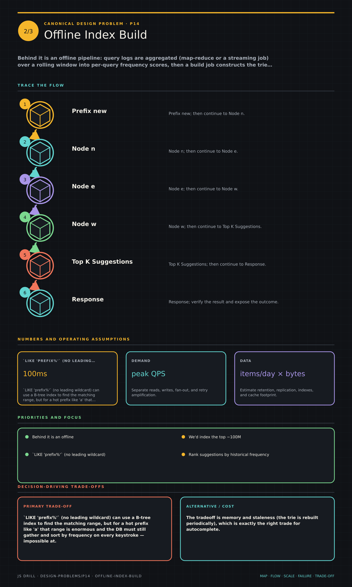
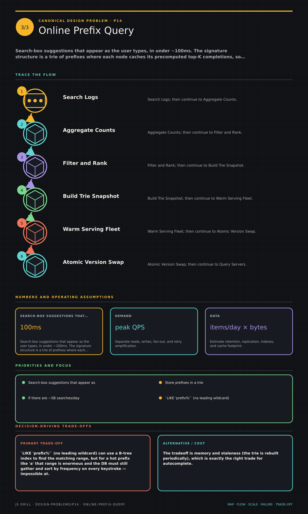

Search-box suggestions that appear as the user types, in under ~100ms. The signature structure is a trie of prefixes where each node caches its precomputed top-K completions, so a lookup is O(prefix length) rather than a ranking query at request time.
Canonical Design Problems9 questions
Results carried by this link
The brief
Functional requirements
Given a prefix, return the top ~5–10 completions ranked by relevance/popularity, updating as the user types.
Clarify: global popularity vs personalized vs context-aware ranking; multilingual; prefix-only or typo-tolerant.
Availability beats perfect freshness — stale suggestions are fine, a slow box is not.
Scale & constraints
~5B searches/day × ~6 prefix lookups → ~30B requests/day, ~350K/s avg, ~1M/s peak (client debounce cuts this a lot)
Index the top ~100M–1B distinct queries; a trie with per-node top-K caches is tens of GB, sharded and in memory
Updates are batch, not a hot path: aggregate query logs and rebuild/patch hourly or daily
Latency dominates: ~50–100ms end to end
Key ideas
Store prefixes in a trie; cache the precomputed top-K completions ON each node so a lookup is O(prefix length), not a scan/sort at query time.
Rank suggestions by historical frequency (and recency/personalization); precompute the ranking offline, don't sort per-request.
Update the trie via periodic batch/offline rebuild from aggregated query logs — real-time per-keystroke writes are too write-heavy and would thrash the top-K caches.
Meet the sub-100ms budget with in-memory tries, edge caching, and client-side debouncing (~50–100ms) so not every keystroke hits the server.
Shard the trie by first characters/prefix ranges; route a request to the shard owning its prefix.
Querying a DB with LIKE 'prefix%' doesn't scale to autocomplete latency/QPS; the precomputed-top-K trie does.
Personalization and freshness are layered on top of the global frequency-ranked base.
Diagrams
3 study sheets · 4 authored diagrams (source below, rendered in the app).
Typeahead / Autocomplete Service system mapSystem mapGive typeahead / autocomplete service system map enough room to trace independently, including scale, failure behavior, and the decision-driving trade-offs.Open the full-size image

Offline Index BuildFocused mechanismGive offline index build enough room to trace independently, including scale, failure behavior, and the decision-driving trade-offs.Open the full-size image

Online Prefix QueryRead flowGive online prefix query enough room to trace independently, including scale, failure behavior, and the decision-driving trade-offs.Open the full-size image
High-level architecture mermaidoverview
An offline aggregation pipeline builds compact top-K tries that a memory-resident serving tier queries in a few hops.
flowchart LR
C["Client + Debounce"]
CDN["Edge / CDN Cache"]
S["Suggest Service"]
T[("In-Memory Trie Shards")]
LOGS[("Query Logs")]
AGG["Aggregation Job"]
BUILD["Trie Build Job"]
C -->|"GET /suggest"| CDN
CDN -->|"cache miss"| S
S --> T
LOGS --> AGG
AGG --> BUILD
BUILD -.->|"push shards"| T
CDN -.->|"cache hit"| C
Precompute top suggestions at each trie node mermaidmechanism
Prefix traversal ends at one node whose cached top-K list makes ranking independent of the number of matching phrases.
flowchart LR
P[Prefix new] --> N1[Node n]
N1 --> N2[Node e]
N2 --> N3[Node w]
N3 --> K[(Top K Suggestions)]
K --> R[Response]
Batch build and atomic trie publish mermaidrequest-flow
Logs are aggregated and filtered offline, then versioned trie snapshots are warmed and swapped into serving without partial updates.
flowchart LR
L[(Search Logs)] --> A[Aggregate Counts]
A --> F[Filter and Rank]
F --> B[Build Trie Snapshot]
B --> W[Warm Serving Fleet]
W --> S{Atomic Version Swap}
S --> Q[Query Servers]
Route by leading prefix and replicate hot shards mermaidoverview
A small router selects the prefix shard; popular prefixes get extra replicas so latency stays bounded under skew.
flowchart LR
Q[Prefix Query] --> R{Prefix Router}
R --> A[(A-F Shard)]
R --> G[(G-M Shard)]
R --> N[(N-Z Shard)]
N --> H1[Hot Replica 1]
N --> H2[Hot Replica 2]
Questions 9
Positions 1–9 of the code. Open questions are answered out loud and self-graded, so their characters are Y / p / n rather than option letters.
Scope a typeahead/autocomplete service. What are the functional requirements, and which non-functional constraint dominates?
Points a strong answer hits:
Functional: given a prefix, return the top ~5–10 completions ranked by relevance/popularity; results update as the user types.
Latency dominates — suggestions must feel instant, budget ~50–100ms end to end.
Read-heavy: enormous query QPS, comparatively rare updates to the suggestion corpus.
Freshness: how fast must a newly-trending query appear (minutes/hours, usually not seconds)?
Clarify: is ranking global popularity, personalized, or context-aware? Multilingual? Prefix-only or fuzzy/typo-tolerant?
Availability > perfect freshness — stale suggestions are fine, a slow box is not.
Model answer: Functionally, given a prefix return the ~top-10 completions ranked by popularity, refreshing on each keystroke. The dominant constraint is latency — it must feel instant, so a ~50–100ms budget end to end. It's extremely read-heavy with rare corpus updates, and availability beats freshness: showing slightly stale suggestions is fine, a laggy box is not. I'd clarify whether ranking is global vs personalized, how quickly trending queries must surface (usually minutes/hours, not seconds), and whether we need typo tolerance or just prefix matching.
Estimate the scale: query QPS, trie size, and update volume for a large search engine's autocomplete.
Points a strong answer hits:
Assume ~5B searches/day; each search generates several prefix requests as the user types (say ~6) ≈ 30B typeahead requests/day.
30B/day ≈ ~350k requests/sec average, ~1M/sec at peak — client debounce cuts this materially.
Corpus: keep top ~100M–1B distinct queries; a trie over them is on the order of tens of GB in memory — shardable.
Storage per node is small (top-K strings + scores); dominated by node count.
Updates: rebuild from aggregated logs periodically (hourly/daily), not per query — write volume is batch, not real-time.
Debouncing at the client (~50–100ms idle) is the single biggest QPS reducer.
Model answer: If there are ~5B searches/day and each typed query fires ~6 prefix lookups, that's ~30B typeahead requests/day ≈ 350k/sec average and ~1M/sec peak — though client debouncing (only query after ~50–100ms of idle) knocks that down a lot. We'd index the top ~100M–1B distinct queries; a trie with per-node top-K caches over that is on the order of tens of GB, which we shard across machines and keep in memory. Updates aren't per-request: we aggregate query logs and rebuild/patch the trie hourly or daily, so writes are batch, not a hot path.
Sketch the API and the offline data pipeline that feeds it.
Points a strong answer hits:
GET /suggest?q={prefix}&lang=&user= → ordered list of ~10 completions (+ optional scores).
Response must be tiny and cacheable at the edge for popular prefixes.
Offline pipeline: collect query logs → aggregate counts (map-reduce/stream) over a rolling window → compute per-query frequency scores.
Build/patch the trie with each node's top-K precomputed from the aggregated scores.
Distribute the built trie/shards to serving nodes (blue-green swap or incremental patch).
Optional: separate personalization service layered at query time.
Model answer: The serving API is essentially one endpoint: GET /suggest?q=prefix returning ~10 ranked completions, tiny and edge-cacheable for hot prefixes. Behind it is an offline pipeline: query logs are aggregated (map-reduce or a streaming job) over a rolling window into per-query frequency scores, then a build job constructs the trie and precomputes each node's top-K completions from those scores. The built trie/shards are pushed to the in-memory serving fleet via a blue-green swap or incremental patch. Personalization, if any, is a thin layer applied at query time on top of the global ranked base.
Describe the core data structure. How is the trie laid out and what exactly is stored per node?
Points a strong answer hits:
A trie (prefix tree): each edge is a character, each path from root spells a prefix.
Each node caches its precomputed top-K completions (the K most-popular full queries under that prefix) + their scores.
A lookup walks the trie by the prefix's characters — O(prefix length) — and returns that node's cached list directly, no scan or sort.
Top-K is computed bottom-up at build time: a node's list merges its children's lists.
Trades memory (duplicating top-K up the tree) for query speed.
Optionally compress with a radix/Patricia trie to collapse single-child chains.
Model answer: It's a trie where each root-to-node path spells a prefix, and crucially each node stores a precomputed cache of its top-K most-popular completions with scores. A request walks the trie character by character — O(prefix length), independent of corpus size — and returns the node's cached list directly, with no per-request scanning or sorting. Those top-K lists are computed bottom-up at build time by merging children's lists up to the root. It deliberately trades memory (the popular completions are duplicated up the tree) for a lookup that's essentially a pointer walk. A radix/Patricia trie collapses single-child chains to save space.
Why use a trie with precomputed per-node top-K instead of querying a database with SELECT ... WHERE query LIKE 'prefix%' ORDER BY freq LIMIT 10?
ALIKE 'prefix%' returns wrong results because SQL can't match string prefixes.
B A leading-wildcard-free LIKE 'prefix%' can use an index, but it still scans/sorts all matches per request; the trie precomputes the ranked top-K so each lookup is O(prefix) with no per-request sort, meeting the sub-100ms budget at massive QPS. correct
C Databases cannot be sharded, whereas tries can.
D The trie guarantees strong consistency of suggestion freshness, which the database cannot provide.
Why:LIKE 'prefix%' (no leading wildcard) can use a B-tree index to find the matching range, but for a hot prefix like 'a' that range is enormous and the DB must still gather and sort by frequency on every keystroke — impossible at hundreds of thousands of QPS within 100ms. The trie moves that ranking work offline: each node already holds its top-K, so serving a request is just walking the prefix and returning a cached list. The tradeoff is memory and staleness (the trie is rebuilt periodically), which is exactly the right trade for autocomplete.
Deep dive: how do you keep suggestions fresh? Compare batch/offline rebuild against real-time per-keystroke updates, and explain why real-time is hard.
Points a strong answer hits:
Batch: aggregate logs and rebuild/patch the trie every hour/day — simple, but new trends lag by the rebuild interval.
Real-time per-keystroke writes are enormous write volume (every search would mutate the trie) — write-heavy on a read-optimized structure.
Updating a frequency also invalidates every ancestor node's top-K cache up to the root — a single update can ripple far.
Practical middle ground: batch-rebuild the base + a fast streaming layer for trending terms, merged at query time.
Freshness requirement usually allows minutes/hours, so batch is acceptable for most of the corpus.
Model answer: The default is a batch/offline rebuild: aggregate query logs and rebuild or patch the trie hourly or daily. Real-time per-keystroke updates are hard for three reasons — the write volume is astronomical (every search would mutate the structure), a single frequency bump invalidates the precomputed top-K of every ancestor node up to the root, and mutating a shared in-memory trie while it serves ~1M reads/sec demands careful copy-on-write or locking. Since freshness usually only needs to be minutes-to-hours, batch is fine for the bulk of the corpus, with an optional lightweight streaming layer for genuinely trending terms merged in at query time.
How do you shard the trie and hit the sub-100ms latency budget across the request path?
Points a strong answer hits:
Shard the trie by prefix ranges (e.g. by first 1–2 characters), each shard owned by a serving node; route requests by prefix.
Very hot prefixes (single letters) are hot shards — replicate them; cache their responses at the edge/CDN.
Serve entirely from memory — no disk on the request path.
Client-side debouncing (~50–100ms idle) so not every keystroke fires a request; cancel in-flight requests when the user types more.
Edge/CDN cache the response for popular prefixes with a short TTL.
Keep responses tiny (~10 short strings) to minimize network time.
Model answer: Shard by prefix — e.g. route on the first one or two characters — with each shard owning part of the trie in memory, and replicate the hottest single-letter prefixes since they're disproportionately queried. Everything on the request path is in-memory, no disk. On the client, debounce ~50–100ms so we only query after the user pauses and cancel superseded in-flight requests. Popular prefixes are cached at the edge/CDN with a short TTL, and responses are kept to ~10 short strings so network time is negligible. That combination — in-memory sharded trie + edge cache + debounce — is what fits inside the 100ms budget.
A user typing 'newy' should quickly get 'new york'. What primarily makes this lookup fast, and where does personalization fit?
A The 'newy' trie node already holds its precomputed top-K globally-popular completions, so serving is an O(prefix) walk + cache read; personalization is a lighter re-rank applied on top of that base list. correct
B The server sorts all queries starting with 'newy' by popularity on each request; personalization replaces that sort.
C A bloom filter stores the completion for each prefix, so no ranking is ever needed.
D The database index guarantees the first row returned is always the personalized best match.
Why: The speed comes from the precomputation: the node for 'newy' already stores its top globally-popular completions, so at request time the server just walks four characters and returns a cached list — no sorting. Personalization is layered afterward: take the small precomputed global candidate set (and optionally the user's own history) and re-rank those ~10–20 items cheaply, rather than re-ranking the whole corpus. Keeping personalization as a thin re-rank on a precomputed base is what preserves the latency budget.
Staff-level: what breaks at scale, and what are the main failure modes and tradeoffs?
Points a strong answer hits:
Hot shards: single-character prefixes get orders of magnitude more traffic — replicate + edge-cache them, or the shard melts.
Memory footprint: precomputed top-K duplicated up the trie is memory-hungry — tune K, use radix compression, cap corpus size.
Freshness vs cost: shorter rebuild interval = fresher but more expensive pipeline and cache churn.
Abuse/spam and offensive suggestions: filter the corpus, apply blocklists — a real production concern.
Multilingual / Unicode / non-Latin scripts complicate the trie and sharding.
Typo tolerance (fuzzy matching) is a separate, harder feature (edit-distance / n-gram index), not free from a plain trie.
Personalization increases per-user state and cache cardinality (can't fully edge-cache personalized responses).
Model answer: The first failure mode is hot shards — single-letter prefixes carry a huge share of traffic, so they must be replicated and edge-cached or they melt. Memory is the next pressure: duplicating top-K up the trie is expensive, so we tune K, apply radix compression, and cap the corpus. There's a core freshness-vs-cost tradeoff in the rebuild interval, and real production concerns around filtering spam/offensive suggestions and handling multilingual scripts. Two things people underestimate: typo tolerance is a genuinely separate, harder problem (edit-distance or n-gram matching, not a plain prefix trie), and personalization defeats simple edge caching because responses become per-user, so it must stay a cheap re-rank on a cacheable global base.
Reading the s= code
If the URL you opened has an s= parameter, it is a result set: one character per question, in the order the questions appear on this page. Uppercase means credit, lowercase means no credit. The letter is the option index shown here — A is the first option listed.
Character
Meaning
A B C D
multiple choice — picked this option, correct
a b c d
multiple choice — picked this option, wrong
Y
open / typed / fill-in — got it
p
open — partial credit
n
open / typed / fill-in — missed
-
not attempted
One segment: every question on this page, in order.
The order of questions and options on this page is fixed and never changes, which is what makes position alone enough to identify a question. Nothing about the code is stored anywhere — it lives only in the URL its owner chose to share.

{kind=link}
{kind=link}